Transformer & Efficient LLM
约 1534 个字 70 行代码 19 张图片 预计阅读时间 6 分钟
一、Transformer 设计变体
虽然原始 Transformer 设计被广泛使用，但社区提出了许多变体：
* 架构：Encoder-decoder (T5), Encoder-only (BERT), Decoder-only (GPT).
* 位置编码：绝对位置编码 \(\to\) 相对位置编码 (Relative PE).
* KV Cache 优化：MHA \(\to\) Multi-Query Attention (MQA) \(\to\) Grouped-Query Attention (GQA).
* FFN：FFN \(\to\) GLU (Gated Linear Unit).
1. Encoder-Decoder 架构 (T5)
- 使用 Encoder-Decoder 架构。
- T5 (Text-to-Text Transfer Transformer)：把所有 NLP 任务都变成了“翻译”任务，提供了一个统一的文本到文本框架，无论是翻译、分类还是摘要，都转换成 "输入文本 \(\to\) 输出文本" 的形式。见下图：
- 分类？ 输入sst2 sentence: I like this movie，让模型生成单词字符串"positive"。
- 回归？ 输入stsb sentence1: ...，让模型生成代表数值的字符串"3.8"。
- 摘要？ 输入summarize: ...，生成摘要文本。
* Prompt 输入 Encoder，Decoder 生成答案。

（图1：统一架构）

（图2：Encoder-Decoder）
2. BERT —— Encoder-only 架构
- BERT：仅使用 Transformer 的 Encoder 部分。
- 预训练目标：
1. 掩码语言模型 (Masked Language Model, MLM)：随机掩盖 15% 的输入 Token，训练模型预测这些被掩盖的 Token。这是双向的。
2. 下一句预测 (Next Sentence Prediction, NSP)：预测句子 B 是否紧跟句子 A（现在较少使用）。 - 预训练模型通过微调 (fine-tuned) 应用于下游任务。
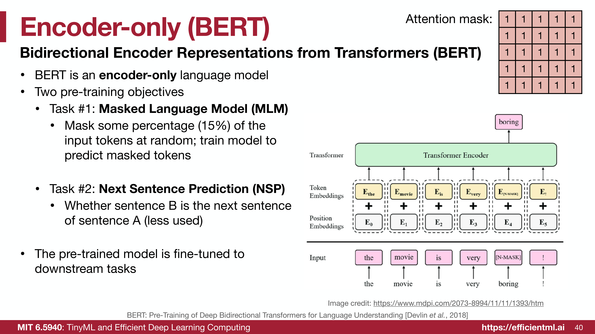
3. Decoder-only 架构 (GPT)
- GPT：仅使用 Transformer 的 Decoder 部分。
- 预训练目标：下一词预测 (Next word prediction)。
* 公式：\(L_1(U) = \sum_i \log P(u_i | u_{i-k}, ..., u_{i-1}; \Theta)\) - 特点：
* 较小的模型 (GPT-2) 进行微调（Fine Tuning）。
* 较大的模型可以进行 Zero-shot / Few-shot 学习，无需微调参数。 - 注意 Mask 矩阵是下三角形式（因果掩码）。
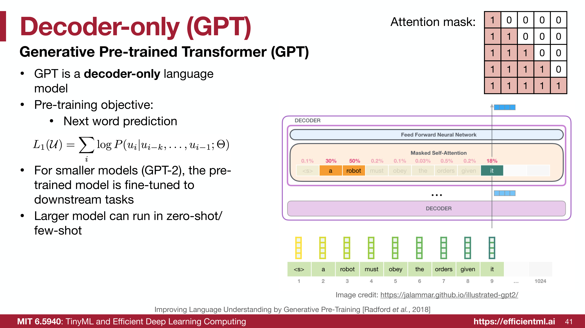
绝对 vs. 相对位置编码
- 绝对位置编码：将位置信息融入输入 Embedding（进而影响 Q/K/V）。信息贯穿整个网络。
- 相对位置编码：通过影响注意力分数 (attention scores) 来提供相对距离信息。通常是添加偏置或修改 Query 和 Key，而不直接修改 Value。
* 优势：具有更好的外推性 (extrapolation)，即 "Train short, test long"（在短序列上训练，在长序列上测试）。
4. ALiBi (Attention with Linear Biases)

在标准的自注意力机制 (Self-Attention) 中，计算查询 (Query) 和键 (Key) 的注意力得分公式为：
其中，\(Q, K, V\) 分别代表查询、键和值矩阵，\(d_k\) 是每个注意力头的维度。传统的做法是在输入 \(Q\) 和 \(K\) 之前，先将位置编码加到词嵌入 (Token Embedding) 上。
ALiBi (Attention with Linear Biases) 抛弃了词嵌入上的位置编码，而是直接在计算出的注意力得分（softmax 之前）上加一个静态的偏置矩阵。其公式变为：
我们来拆解这个新增的项 \(m \cdot M\)：
-
\(M\) (距离矩阵, Distance Matrix)：
它衡量的是目标词（Query 的位置 \(i\)）和上下文词（Key 的位置 \(j\)）之间的相对距离。
$\(M_{i,j} = -|i - j|\)$
对于自回归（Causal）语言模型，由于只能看到当前及之前的词，通常 \(j \le i\)，所以距离就是 \(-(i - j)\)。这表示：词与词之间的距离越远，惩罚（负值）就越大。 -
\(m\) (特定于头的斜率, Head-specific Slope)：
这是一个常数标量（不参与训练更新），不同的注意力头 (Attention Head) 有不同的斜率。这样可以让不同的头关注不同范围的上下文。
假设有 \(H\) 个注意力头，斜率 \(m\) 通常是一个几何数列。例如对于 8 个头，斜率分别是：
$\(m = \left\{\frac{1}{2^1}, \frac{1}{2^2}, \frac{1}{2^3}, \dots, \frac{1}{2^8}\right\} = \left\{\frac{1}{2}, \frac{1}{4}, \frac{1}{8}, \dots, \frac{1}{256}\right\}\)$
综合起来：对于第 \(h\) 个注意力头，位置 \(i\) 的 Query 和位置 \(j\) 的 Key 之间的未归一化注意力得分为：
然后通过 softmax 转化为概率权重。距离越远，\(|i-j|\) 越大，减去的值就越多，该位置的注意力权重就成指数级衰减。
import torch
import math
def get_alibi_slopes(num_heads):
"""
生成 ALiBi 中每个注意力头专属的斜率 (slopes)。
如果是 8 个头，斜率将是: 1/2, 1/4, 1/8, 1/16, 1/32, 1/64, 1/128, 1/256
"""
# 找到小于等于 num_heads 的最接近的 2 的幂次方
closest_power_of_2 = 2 ** math.floor(math.log2(num_heads))
# 计算基础的衰减底数 (例如当头数为 8 时，base 就是 0.5)
base = 2 ** (-(2 ** -(math.log2(closest_power_of_2) - 3)))
# 生成几何数列作为斜率
slopes = [math.pow(base, i) for i in range(1, closest_power_of_2 + 1)]
# 将其转换为 Tensor，并调整形状为 (num_heads, 1, 1)，
# 这样在后续与形状为 (seq_len, seq_len) 的距离矩阵相乘时，可以利用 PyTorch 的广播机制 (Broadcasting)
return torch.tensor(slopes, dtype=torch.float32).view(-1, 1, 1)
def alibi_attention(Q, K, V, num_heads, mask=None):
"""
ALiBi 注意力机制的实现。
参数:
Q, K, V: 形状均为 (batch_size, num_heads, seq_len, head_dim)
num_heads: 注意力头的数量
mask: 掩码 (例如因果掩码 causal mask，用于遮蔽未来的词)
"""
batch_size, _, seq_len, head_dim = Q.shape
# 第 1 步: 计算标准的缩放点积注意力得分 (对应公式: QK^T / sqrt(d_k))
# K.transpose(-2, -1) 将最后的序列长度和头部维度转置
# scores 的形状: (batch_size, num_heads, seq_len, seq_len)
scores = torch.matmul(Q, K.transpose(-2, -1)) / math.sqrt(head_dim)
# 第 2 步: 创建相对距离矩阵 (对应公式中的 M)
# position 形状: (seq_len,) -> [0, 1, 2, ..., seq_len-1]
position = torch.arange(seq_len, device=Q.device)
# 利用广播机制计算任意两个位置之间的距离 (i - j)
# distance 形状: (seq_len, seq_len)
distance = position.unsqueeze(1) - position.unsqueeze(0)
# 取绝对值的负数，表示距离越远惩罚越大 (对应公式: -|i - j|)
distance = -torch.abs(distance)
# 第 3 步: 获取特定于头的斜率并计算 ALiBi 偏置矩阵 (对应公式: m * M)
# slopes 形状: (num_heads, 1, 1)
slopes = get_alibi_slopes(num_heads).to(Q.device)
# 广播相乘后，alibi_bias 形状: (num_heads, seq_len, seq_len)
alibi_bias = slopes * distance
# 第 4 步: 将 ALiBi 偏置直接加到注意力得分上
# 这里也用到了广播机制，(num_heads, seq_len, seq_len) 会自动加到每一条 batch 数据上
scores = scores + alibi_bias
# 第 5 步: 如果有掩码 (如生成任务不能看未来的词)，将需要遮蔽的位置替换为负无穷
if mask is not None:
scores = scores.masked_fill(mask == 0, float('-inf'))
# 第 6 步: 进行 Softmax 归一化，转换为注意力权重 (0~1之间)
attn_weights = torch.softmax(scores, dim=-1)
# 最后将权重乘上 Value 矩阵
# out 形状: (batch_size, num_heads, seq_len, head_dim)
out = torch.matmul(attn_weights, V)
return out
5. 旋转位置编码 (Rotary Positional Embedding, RoPE)
- 目前最流行的相对位置编码（LLaMA 使用）。
- 核心思想：在 2D 空间中旋转 Embedding。
* 将 \(d\) 维 Embedding 分为 \(d/2\) 对，每一对视为一个 2D 坐标。
* 根据绝对位置 \(m\) 对向量进行旋转。 - 数学特性：两个复数向量内积的相位角等于两个向量的相位差（即 \(m-n\)），从而自然地引入了相对位置信息。
- 公式：
$$ \langle \text{RoPE}(q, m), \text{RoPE}(k, n) \rangle = \text{RoPE}(q^T k, m-n) $$
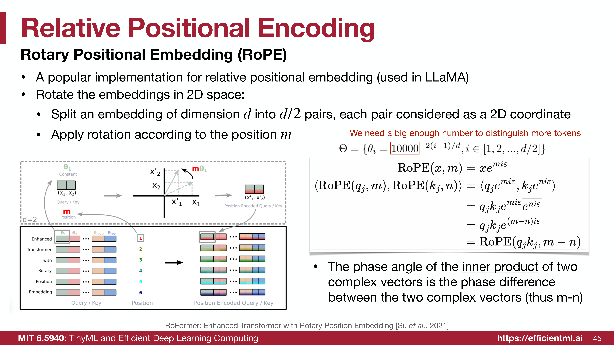
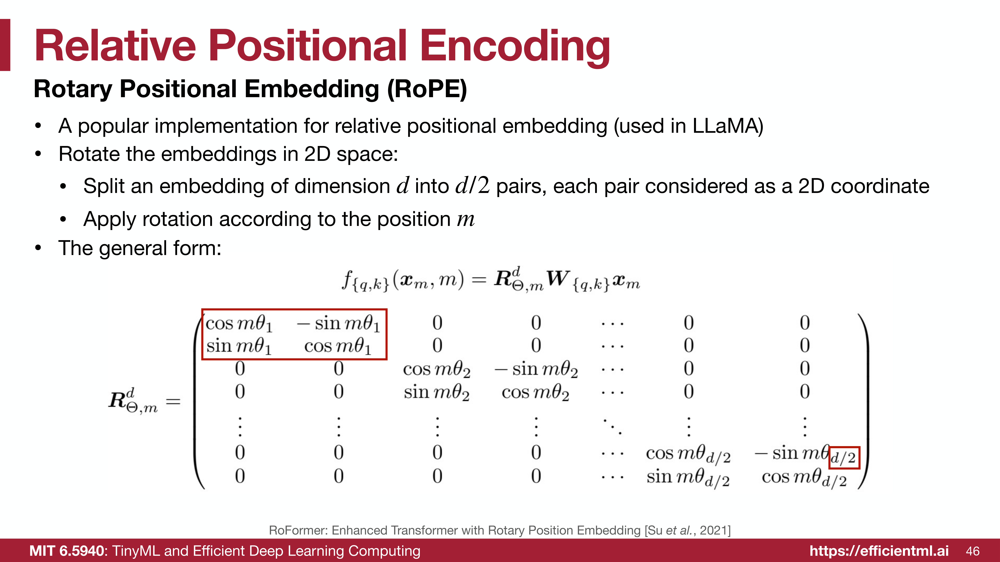
Slide 47: RoPE 的优势 - 扩展上下文窗口
- LLM 通常在受限的上下文长度上训练（如 LLaMA 的 2k），直接处理更长文本会失败。
- 通过插值 (interpolating) RoPE 的位置编码（即使用更小的 \(\theta_i\)），可以扩展上下文长度支持。
- 例如：将 LLaMA 从 2k 扩展到 32k。
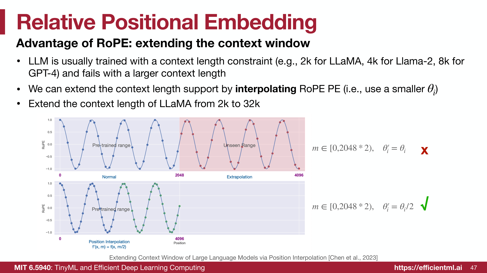
Slide 49-54: KV Cache 优化
- 问题：在 Transformer 解码（GPT 风格）过程中，我们需要存储所有先前 Token 的 Key 和 Value，以便进行注意力计算。这就是 KV Cache。
- 内存占用：KV Cache 会随着上下文长度增加而变得巨大。
* 对于 LLaMA-2-70B，如果使用 MHA，Batch Size=16, Seq Len=4096 时，KV Cache 需要 160GB 显存（需要两张 A100 GPU！）。
* KV Cache 的大小增长速度远快于模型权重。
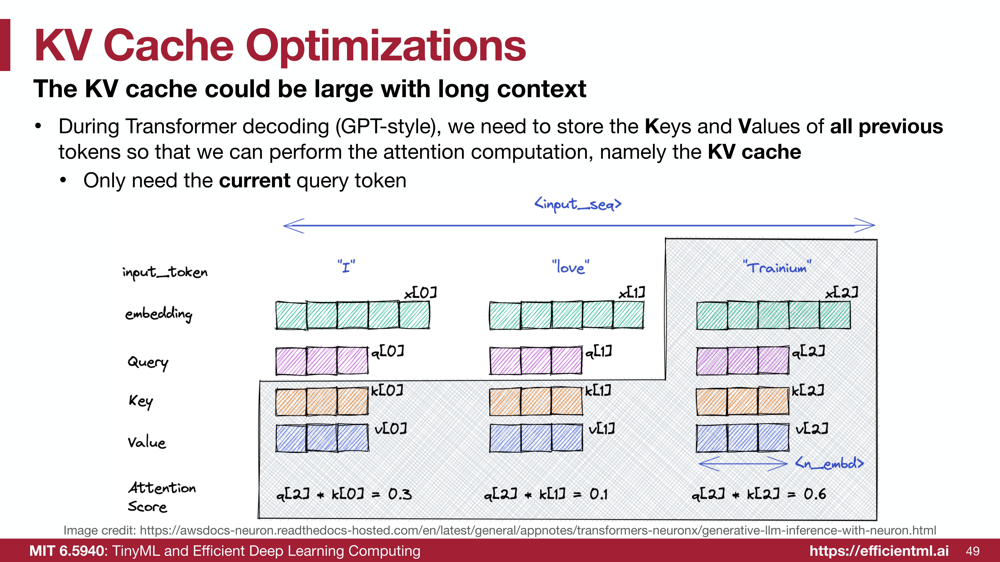
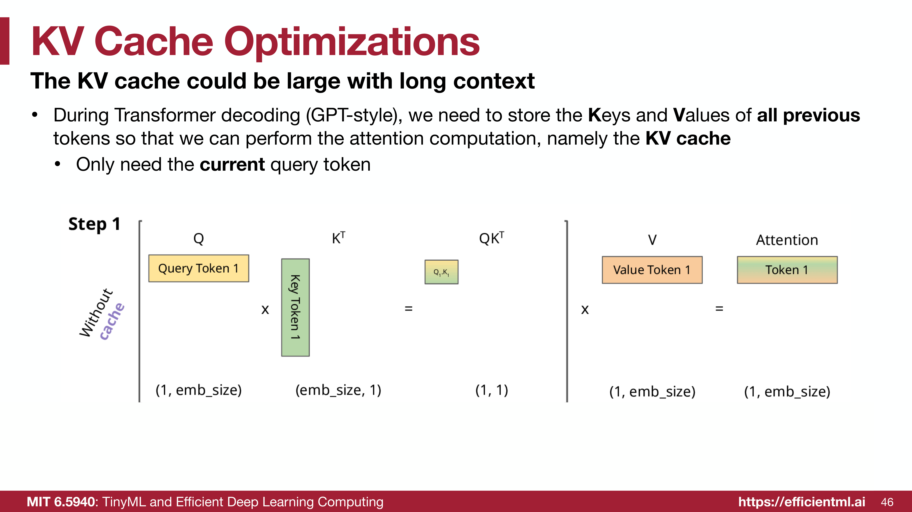
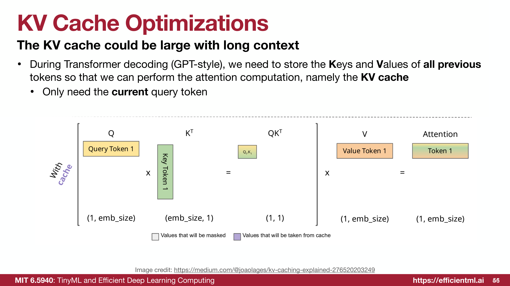
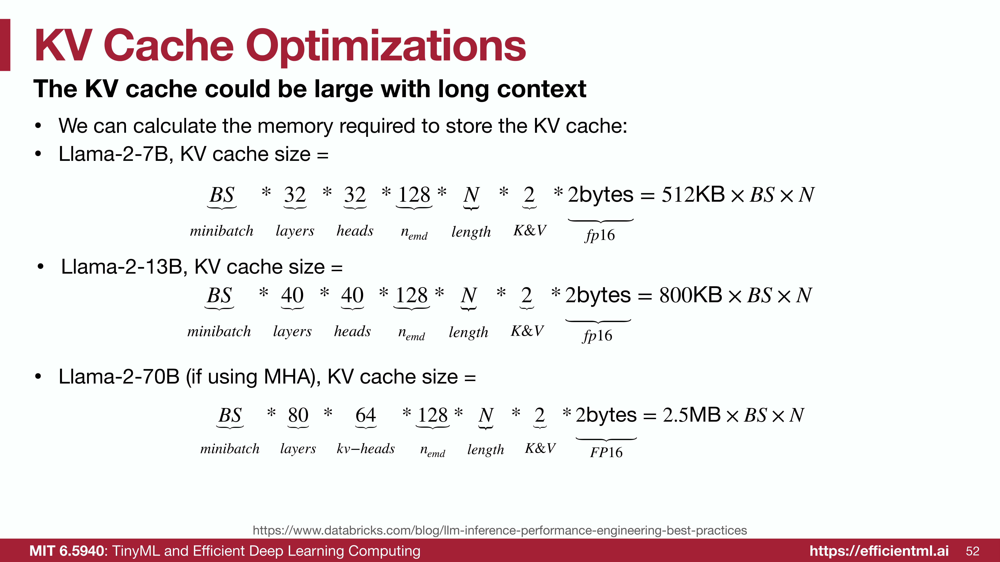
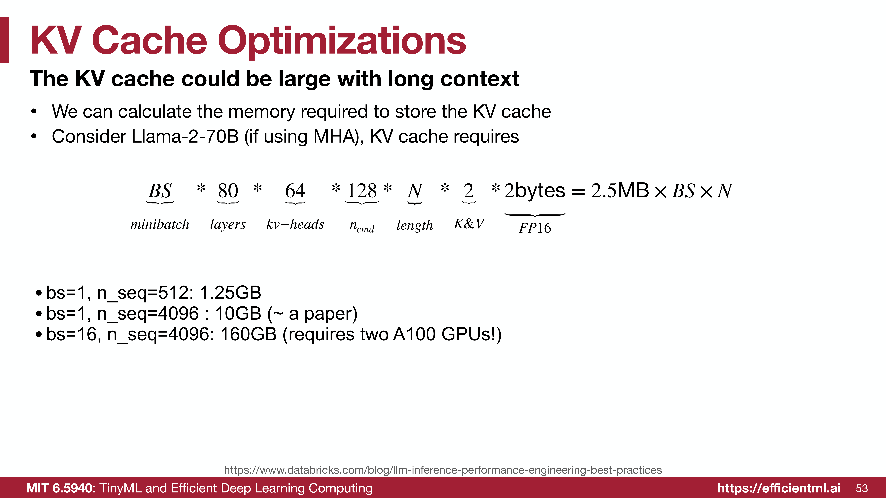
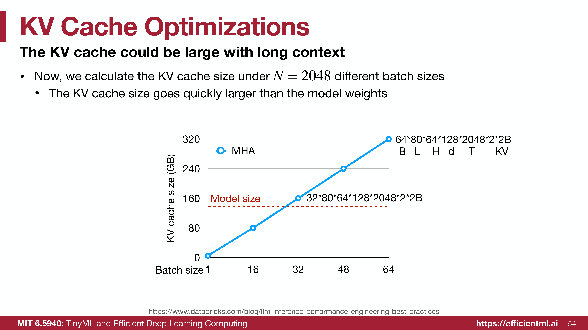
Slide 55-57: MQA 与 GQA
为了减少 KV Cache 的内存占用：
* 多头注意力 (MHA)：\(N\) 个 Query 头，\(N\) 个 Key/Value 头。
* 多查询注意力 (Multi-Query Attention, MQA)：\(N\) 个 Query 头，1 个 Key/Value 头。极致节省显存，但可能降低精度。
* 分组查询注意力 (Grouped-Query Attention, GQA)：\(N\) 个 Query 头，\(G\) 个 Key/Value 头（通常 \(G = N/8\)）。
* 优势：GQA 在保持与 MHA 相当精度的情况下，显著减少了内存占用（例如减少 8 倍）。LLaMA-2-70B 和 LLaMA-3 都使用了 GQA。
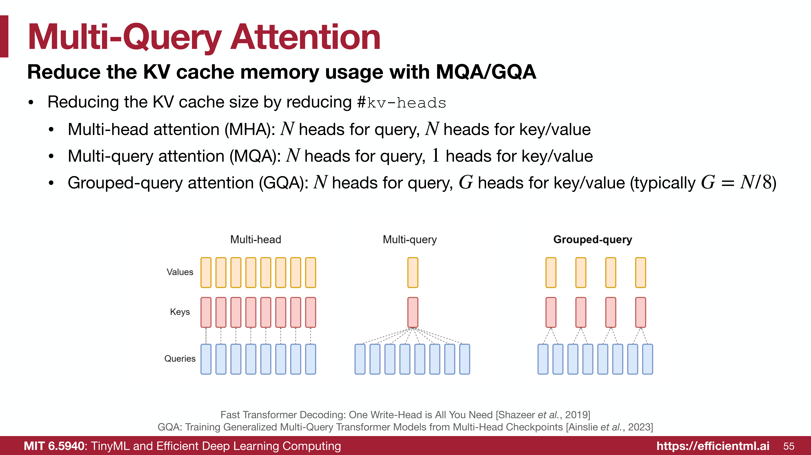
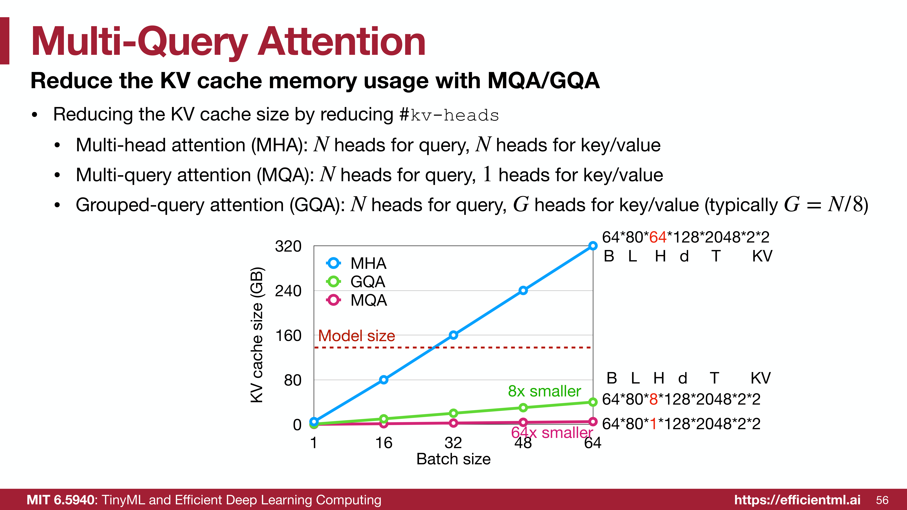
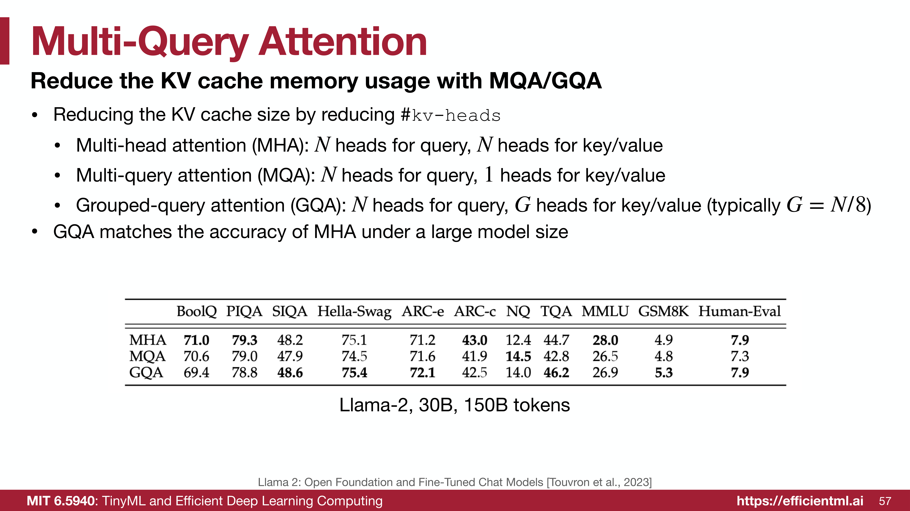
Slide 59-60: GLU (Gated Linear Unit)
- 改进 FFN：用 GLU 替换传统的 FFN 可以提升 Transformer 性能。
- SwiGLU：结合了 Swish 激活函数和 GLU。
* 公式：\(\text{FFN}_{\text{SwiGLU}}(x, W, V, W_2) = (\text{Swish}_1(xW) \otimes xV)W_2\)
* Swish/SiLU 函数：\(y = x \cdot \sigma(x)\)。
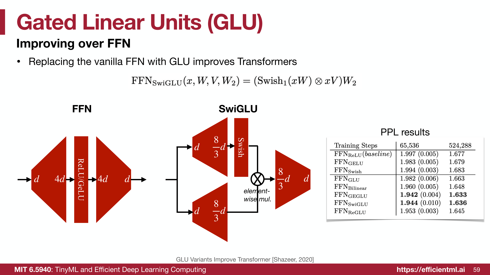
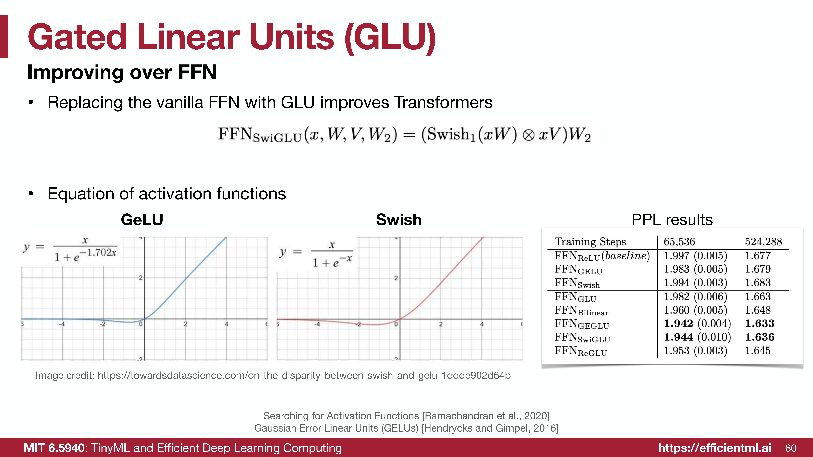